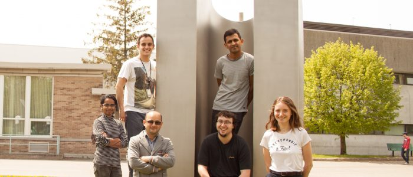

Home
DuongLab is a research group located at the Université du Québec
à Trois-Rivières, at the Hydrogen Research Institute. Founded
in 2014 by Professor Adam Duong, the group is interested in
design, synthesis and characterizations of materials for the
development of sustainable energies. Two central issues is
addressed in our work: energy conversion and storage.
The group is working on the synthesis of novel materials to
improve the current energy technologies. Particularly involved
in the design of materials for batteries, DuongLab also seeks
to address the problems of storage and synthesis of gas from
the properties of materials.
During many decades, scientists have attempted to prepare
three-dimensional, two-dimensional structures in order to induce
properties to materials. DuongLab offers innovative synthetic
methods for incorporating and positioning functional groups to
various types of materials such as Covalent Organic Frameworks
(COF), Metal Organic Frameworks (MOF), Hydrogen bounded Organic
Frameworks (HOF).
DuongLab also places at the heart of its concerns the transmission
of knowledge. The group constantly seeks to participate in the
training of future generations of researchers, but also to be
part of the scientific community which, through exchanges between
its members, allows the expansion of knowledge. DuongLab is
involved in teaching and is involve in several center and
institut, and has numerous collaborations with other
universities.